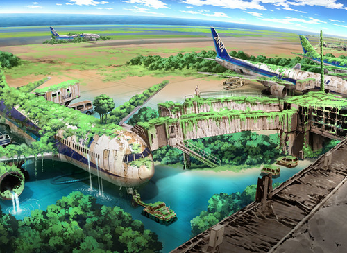
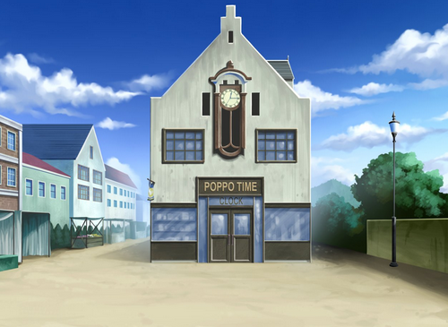

それぞれの物語
ここでは皆さんの物語のあらすじや物語を説明していきます。皆さんの物語の飽くまでの予測であるため、ここから皆さんの行動によっては大きく変化する場合もあります。その点はご了承ください。
第一話「新しい旅達 世界の名を見るもの」
皆さんはそれぞれの移動手段を利用し「デュエルアカデミア」の入学書に書かれているドミノ町 「ドミノ国際空港」へやってきました。
そこには「デュエルアカデミア」の誘導係として、ある少女がそこに来ていました。
その少女の話を聞くと「アカデミア」の入学までには一週間の準備期間が有り、その準備を共同のホテルがあるので一週間、そこで準備を行い、アカデミア入学の準備を進めてほしいと言います。
皆さんはそのホテルで入学までの一週間の間、準備をしていくことになります。
そこでプレイヤーたちはある事件に遭遇していくと言うが・・？
第二話「ネオ・ドミノシティ」
遅れてきた数名もやってきて、いよいよ街の探索が始まりました。
ここは「ネオ・ドミノシティ」 遊星粒子で紡がれた街です。
この街では少し前に「不動遊星」と「ZONE」と呼ばれる人間の戦いがあり、「アーククレイドル」が地面に衝突するしかけるという事件がありました。
ですが、今ではその事件の爪痕は全て修復され、「セキュリティ」や「コモンズ」などの差別もなくなり、皆が皆なかよく過ごしています。
プレイヤーたちは、この街を見学するためにやってきたが、そこでリンク召喚がこの世界に来た理由を耳にするというが・・？